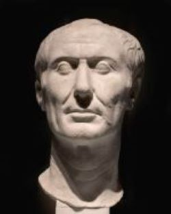

Cayo Julio César o Gayo Julio César a (c.100-44 a. C.) fue un político y militar romano del siglo I a. C. miembro de los patricios Julios Césares que alcanzó las más altas magistraturas del Estado romano y dominó la política de la República tras vencer en la guerra civil que le enfrentó al sector más conservador del Senado.
Nacido en el seno de la gens Julia, una familia patricia de escasa fortuna, estuvo emparentado con algunos de los hombres más influyentes de su época, como su tío Cayo Mario, quien influiría de manera determinante en su carrera política. En 84 a. C., a los 16 años, el popular Lucio Cornelio Cina lo nombró flamen Dialis, cargo religioso del que fue relevado por Sila, con quien tuvo conflictos a causa de su matrimonio con la hija de Cinna. Tras escapar de morir a manos de los sicarios del dictador Sila, fue perdonado gracias a la intercesión de los parientes de su madre. Trasladado a la provincia de Asia, combatió en Mitilene como legado de Marco Minucio Termo. Volvió a Roma a la muerte de Sila en 78 a. C., y ejerció por un tiempo la abogacía. En 73 a. C. sucedió a Cayo Aurelio Cota como pontífice, y pronto entró en relación con los cónsules Pompeyo y Craso, cuya amistad le permitiría lanzar su propia carrera política.b En 70 a. C. César sirvió como cuestor en la provincia de la Hispania Ulterior y como edil curul en Roma. Durante el desempeño de esa magistratura ofreció unos espectáculos que fueron recordados durante mucho tiempo por el pueblo.
En 63 a. C. fue elegido pretor urbano al obtener más votos que el resto de candidatos. Ese mismo año murió Quinto Cecilio Metelo Pío, pontifex maximus designado durante la dictadura de Sila, y, en las elecciones celebradas para sustituirle, venció César. Al término de su pretura sirvió como propretor en Hispania, donde capitaneó una breve campaña militar contra los lusitanos. En 59 a. C. fue elegido cónsul gracias al apoyo de sus dos aliados políticos, Pompeyo y Craso, los hombres con los que César formó el llamado Primer Triunvirato. Su colega durante el consulado, Marco Calpurnio Bíbulo, se retiró para así entorpecer la labor de César que, sin embargo, logró sacar adelante una serie de medidas legales, entre las que destaca una ley agraria que regulaba el reparto de tierras entre los soldados veteranos.
Tras su consulado fue designado procónsul de las provincias de la Galia Transalpina, Iliria y la Galia Cisalpina, esta última tras la muerte de su gobernador, Céler. Su gobierno se caracterizó por una política muy agresiva con la que sometió a prácticamente la totalidad de los pueblos celtas en varias campañas. Este conflicto, conocido como la guerra de las Galias, finalizó cuando el general republicano venció en la batalla de Alesia a los últimos focos de oposición, encabezados por un jefe arverno llamado Vercingétorix. Sus conquistas extendieron el dominio romano sobre los territorios que hoy integran Francia, Bélgica, Países Bajos y parte de Alemania. Fue el primer general romano en penetrar en los inexplorados territorios de Britania y Germania.
Mientras César terminaba de organizar la estructura administrativa de la nueva provincia que había anexionado a la República, sus enemigos políticos trataban en Roma de despojarle de su ejército y cargo utilizando el Senado. César, a sabiendas de que si entraba en la capital sería juzgado y exiliado, intentó presentarse al consulado in absentia, a lo que los optimates se negaron. Este y otros factores le impulsaron a desafiar las órdenes senatoriales y protagonizar el famoso cruce del Rubicón, momento en el que, al parecer, pronunció la inmortal frase alea iacta est («la suerte está echada»). Inició así una nueva guerra civil, en la que se enfrentó a los optimates, que estaban liderados por su antiguo aliado, Pompeyo. Sus victorias en las batallas de Farsalia, Tapso y Munda sobre los conservadores, le hicieron el amo de la República. El hecho de que estuviera en plena guerra civil no evitó que se enfrentara a Farnaces II en Zela y a los enemigos de Cleopatra en Alejandría. A su regreso a Roma se hizo nombrar cónsul y dictador perpetuo, e inició una serie de reformas económicas, urbanísticas y administrativas.
A pesar de que bajo su gobierno la República experimentó un breve periodo de gran prosperidad, algunos senadores vieron a César como un tirano que ambicionaba restaurar la monarquía. Con el objetivo de eliminar la amenaza que suponía el dictador, un grupo de senadores formado por algunos de sus hombres de confianza como Marco Junio Bruto y Cayo Casio Longino y antiguos lugartenientes como Cayo Trebonio y Décimo Junio Bruto Albino urdieron una conspiración con el fin de eliminarlo. Dicho complot culminó cuando, en los idus de marzo, los conspiradores asesinaron a César en el Senado. Su muerte provocó el estallido de un largo periodo de guerras, en la que los partidarios del régimen de César, Marco Antonio, Octavio y Lépido, derrotaron en la doble batalla de Filipos a sus asesinos, liderados por Bruto y Casio. Al término del conflicto, Octavio, Antonio y Lépido formaron el Segundo Triunvirato y se repartieron los territorios de la República, aunque, una vez apartado Lépido, finalmente volverían a enfrentarse en Accio, donde Octavio, heredero de César, venció a Marco Antonio y se proclamó primer emperador romano con el nombre de Augusto.
Al margen de su carrera política y militar, César destacó como orador y escritor. Redactó, al menos, un tratado de astronomía, otro acerca de la religión republicana romana y un estudio sobre el latín, ninguno de los cuales ha sobrevivido hasta nuestros días. Las únicas obras que se conservan son sus Comentarios de la guerra de las Galias y sus Comentarios de la guerra civil. Se conoce el desarrollo de su carrera como militar y gran parte de su vida a través de sus propias obras y de los escritos de autores como Suetonio, Plutarco, Veleyo Patérculo o Eutropio.